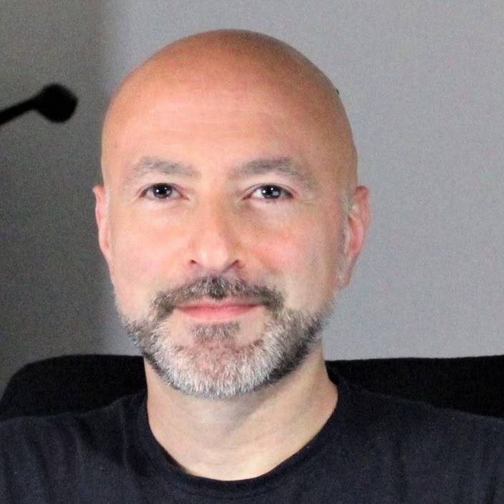
Group Leader
We bring computational scientists, molecular biologists and genome engineers together around the same biological questions. Computation shapes the experiments; experiments reshape the models.
Individual profiles open on our legacy website.

Group Leader
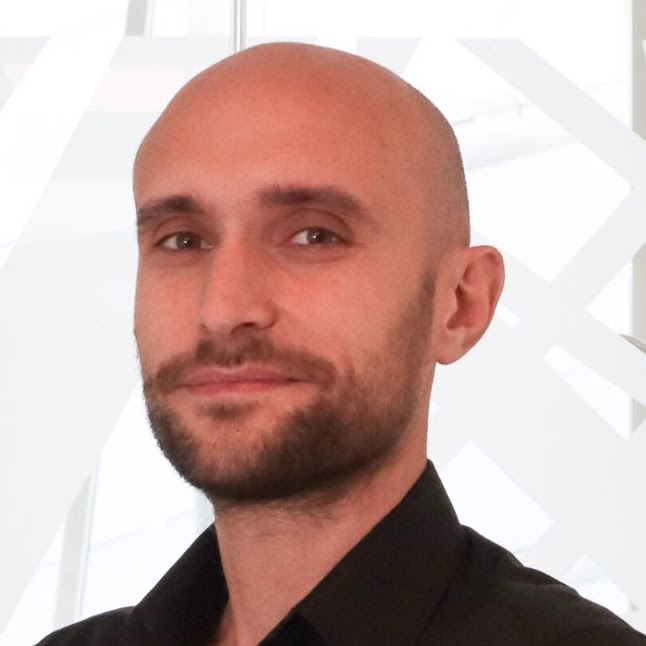
Senior Data Scientist
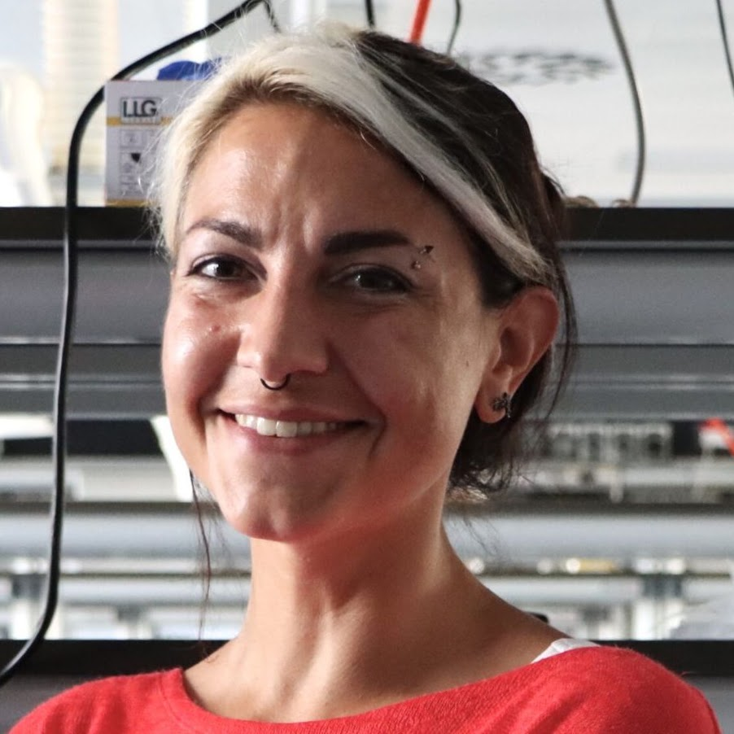
Senior Lab Technician
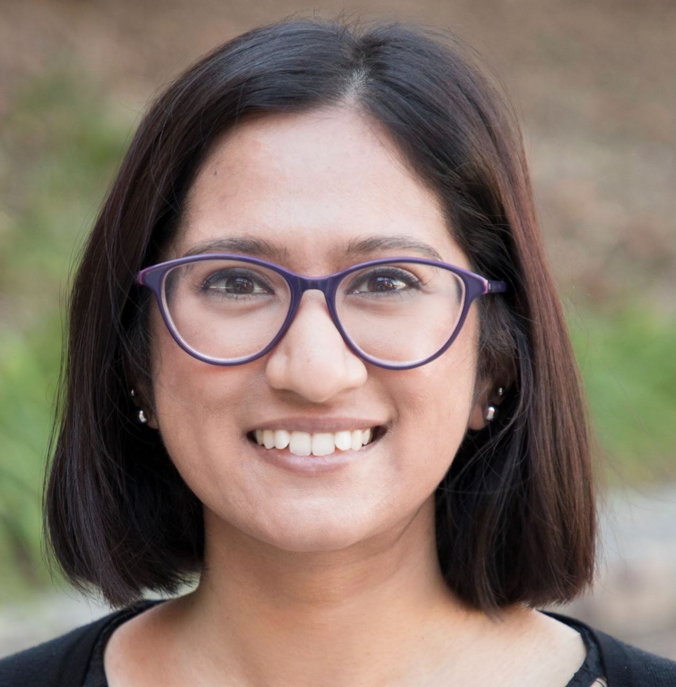
OT Postdoctoral Fellow
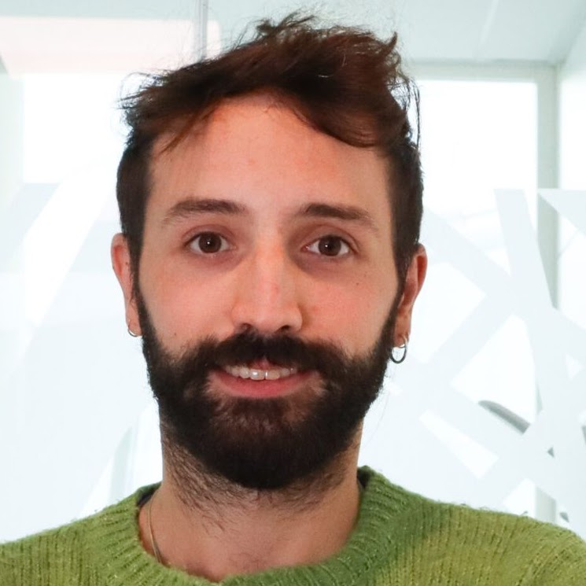
Postdoctoral Fellow
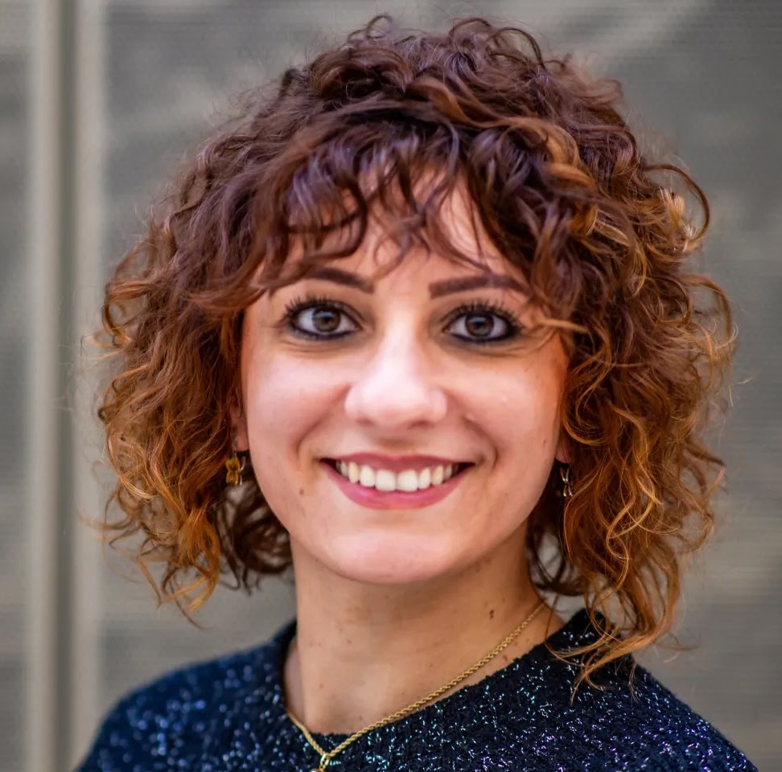
DELBRUCK Postdoctoral Fellow
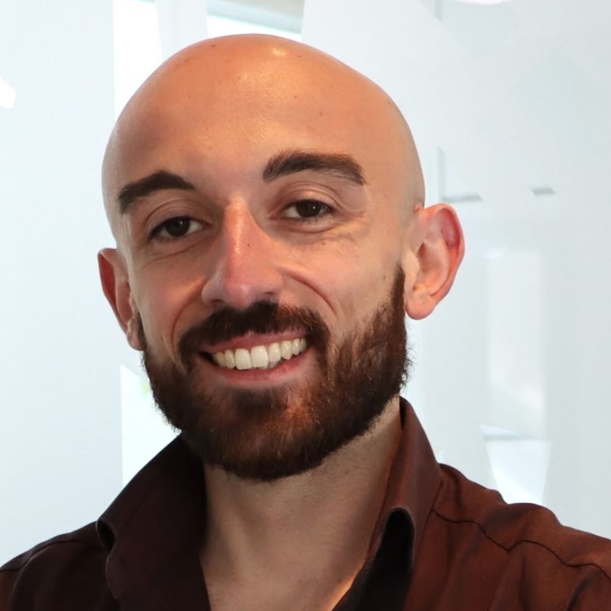
ERC Postdoctoral Fellow
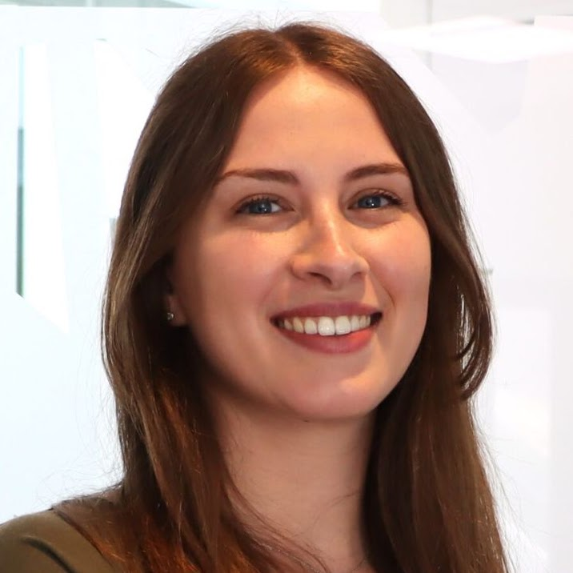
ERC Postdoctoral Fellow
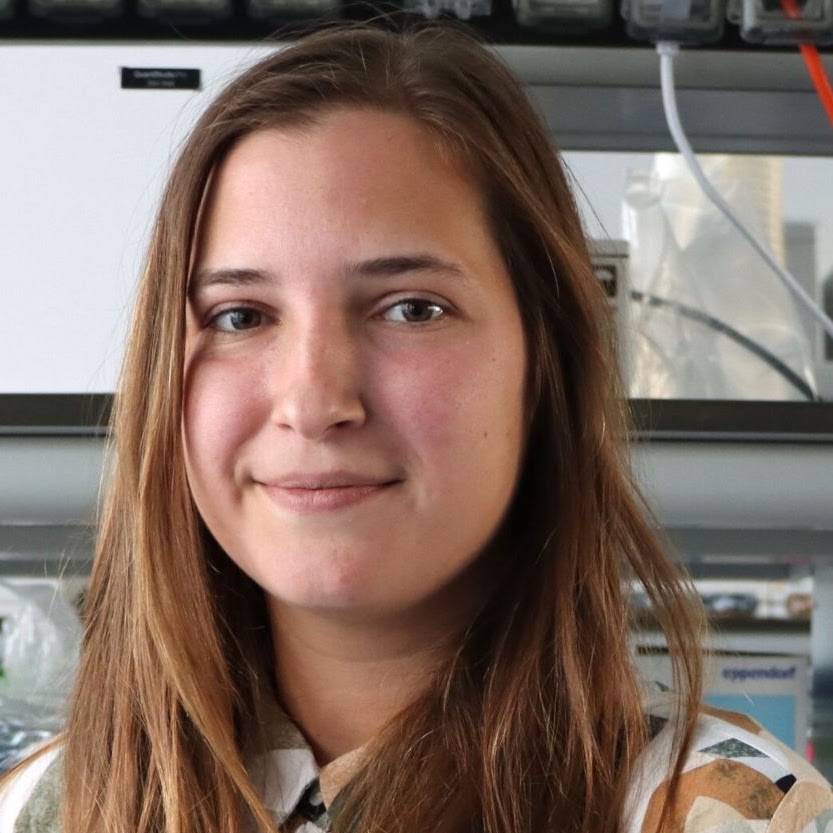
AIRC Postdoctoral Fellow
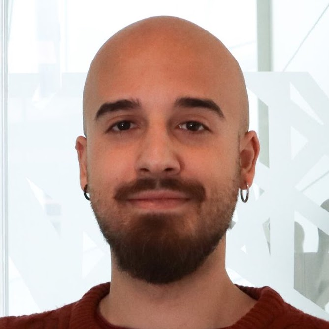
SEMM NeuroCOV PhD Student

SEMM PhD Student
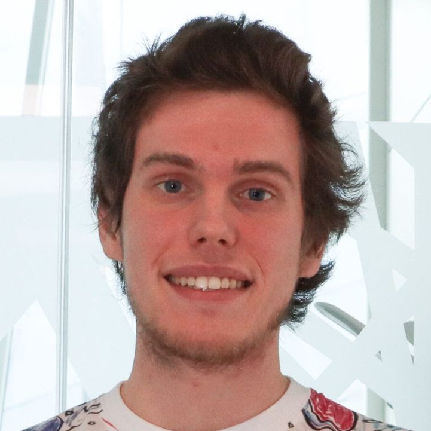
SEMM NMS PhD Student
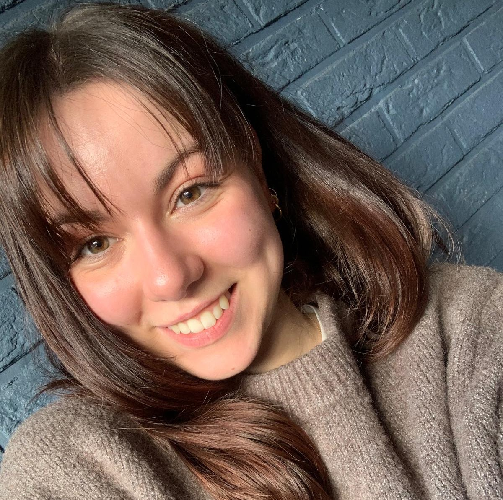
Visiting PhD Student
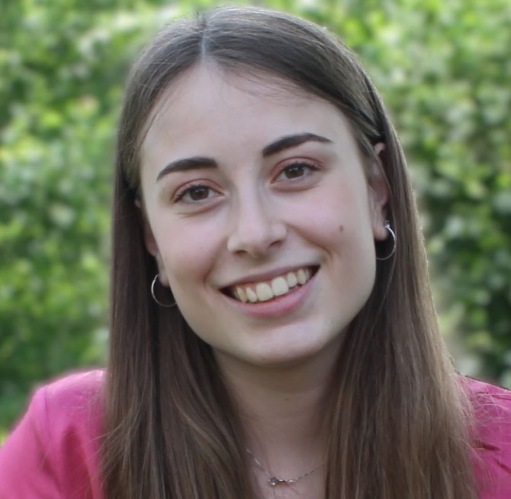
Graduate Student Intern
Yasin Tepeli
PhD Student at TU Delft
Roles held in the lab.
Senior Bioinformatician
Master Student
Software and Web Developer
Postdoctoral Fellow
Postdoctoral Fellow
PhD Student
Master Student
Master Student
Postdoctoral Fellow
PhD Student